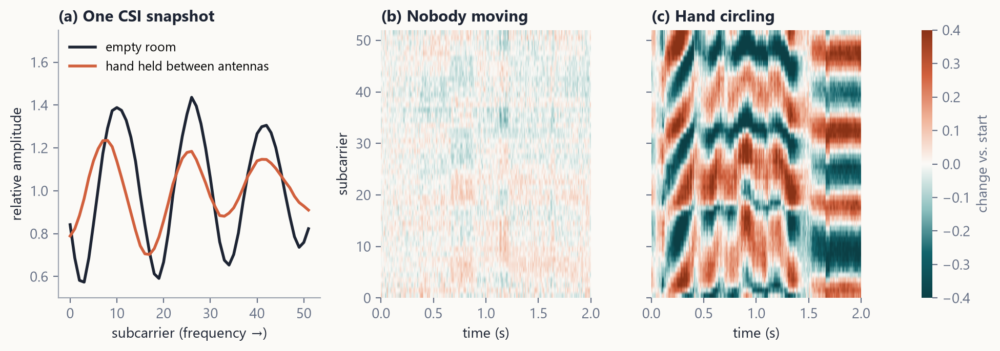
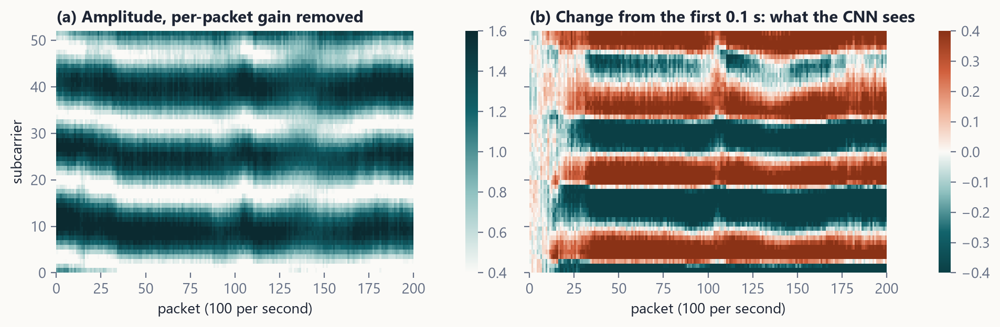
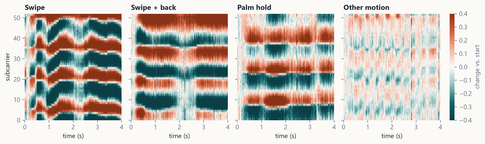
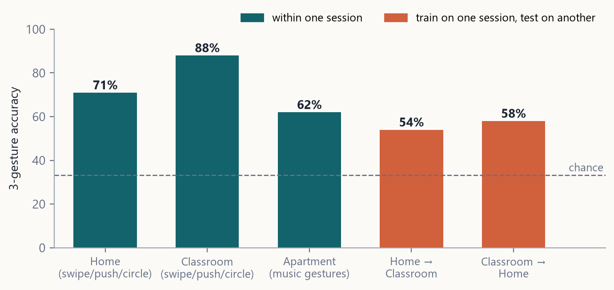

WaveSense
Seeing hands with Wi-Fi: gesture control from channel measurements, running on an ESP32-S3
WaveSense is a music controller you use by moving your hand between two small Wi-Fi boards. One board sends packets and the other measures how your hand changed them. For this class the goal is to run the whole recognizer on that receiver, a thumb-sized ESP32-S3 with 512 KB of RAM, with no laptop in the loop. Our prototype already gets 88% within one recording session, but it runs in Python on a laptop and drops to about 55% on a new session. Getting it onto the board and working across sessions is the project.
01How Wi-Fi sees a hand
Wi-Fi splits each channel into 64 narrow subcarriers. Every packet starts with a pattern the receiver already knows, so it can measure how each subcarrier was weakened and delayed on the way. That measurement is called Channel State Information (CSI), and the ESP32 lets us read it.
The signal reaches the receiver along many paths at once, and the copies add up at some subcarriers and cancel at others. A hand adds new reflections and changes that pattern. With a 12 cm wavelength, a few centimeters of movement is enough to see.

02What runs on the board
WaveSense recognizes three gestures: a swipe for next track, a swipe and back for previous, and a held palm to pause. Left and right swipes look the same to a single link, so the gestures differ in shape instead.
Right now the receiver only measures. Its CSI callback copies each packet into a queue, a second task formats it, and USB carries it to a laptop where Python does the classifying (Figure 3, top). The goal is the bottom row. The board keeps the last two seconds in a ring buffer, and a cheap motion check runs on every packet. Only when that check fires does a small int8 network look at the window. The answer goes out as a media key over Bluetooth.
The hard part is fitting all of this next to the Wi-Fi stack, which shares the same memory and has to keep receiving 100 packets a second while the model runs. Our plan is to leave Wi-Fi on one core and put inference on the other. These are the budgets we're aiming for:
| XIAO ESP32-S3 has | WaveSense budget | |
|---|---|---|
| RAM | 512 KB SRAM, shared with Wi-Fi | ≤ 150 KB for buffer and tensor arena |
| Flash | 8 MB | ≤ 200 KB model after int8 quantization |
| Compute | 2 cores at up to 240 MHz, with SIMD | ≤ 50 ms per inference, on the second core |
| Input | 100 packets/s × 52 subcarriers | 2 s window = 10.4 KB as int8 |
What the model sees
Each input is a 52 × 200 grid: 52 subcarriers by 200 packets, which is two seconds at 100 packets a second (Figure 4). The board builds it in four steps. First it turns each packet's complex CSI into 52 amplitudes, dropping the empty slots at the band edges and center. Then it divides each packet by its own average, which cancels the jumps from the radio's automatic gain control. When the motion gate fires, it copies the 200 packets starting 0.2 s before the motion. Last, it subtracts the average of the first ten packets, so the window shows how the channel changed instead of what the room looks like. That last step is our main bet for new sessions. Every room has a different static pattern, but a hand should change it in a similar way. Scaled to int8, a window is 10.4 KB.

The network
We treat the 52 subcarriers as input channels and convolve along time only. Neighboring subcarriers move together and a gesture is a shape in time, so a 1D network gets what matters for far less compute than a 2D one (Figure 5). Four convolution layers with ReLU, three of them with stride 2, shrink the window from 200 time steps to 25 while widening to 64 channels. Global average pooling then throws away the exact timing, and one dense layer scores four classes: swipe, swipe and back, palm, and other motion. Batch norm gets folded into the convolutions on export.
That comes to about 32,000 weights, or 32 KB as int8, and about 1.5 million multiply-adds per window. The largest pair of activations alive at once is about 14 KB. That's well under the budgets above, so there's room to grow the network if accuracy needs it. We'll train with random time shifts, amplitude scaling and dropped subcarriers. If plain post-training int8 quantization costs more than a couple of points, we'll switch to quantization-aware training.
03What works so far
The receiver firmware is written in ESP-IDF and streams CSI at the full 100 packets per second. Getting there took some work. The default USB console polls a 64-byte FIFO and only let about 40 packets a second through, so we moved formatting out of the Wi-Fi callback into its own task and gave the USB driver a 16 KB buffer. We also wrote firmware for a second board that broadcasts ESP-NOW packets at 100 Hz. It will replace the phone hotspot we've recorded with so far.
To keep sessions comparable, we designed a 3D-printed stand with no metal parts that holds both antennas in the same spot every time (Figure 6), and a recording app that shows an animated hand to follow and labels every trial (Figure 7).


Each gesture leaves a different mark in the CSI (Figure 8).

Simple classifiers on laptop-side features get 71–88% within a session but only 54–58% on a different one (Figure 9). That tells us the signal is there. It doesn't tell us anything fits on the board yet.

04What's next
- Record more. Many sessions across all four of us, with the ESP32 transmitter and the stand.
- Train small. A 1D CNN on 52 × 200 windows, quantized to int8 and checked against the float version so we know what quantization costs.
- Deploy. Run it with TensorFlow Lite Micro and Espressif's optimized kernels, add the motion gate, then measure latency, RAM, flash and power on the board and count false triggers while people walk around.
We'll grade ourselves on one number above all: accuracy on a new session with the model running on the ESP32-S3.